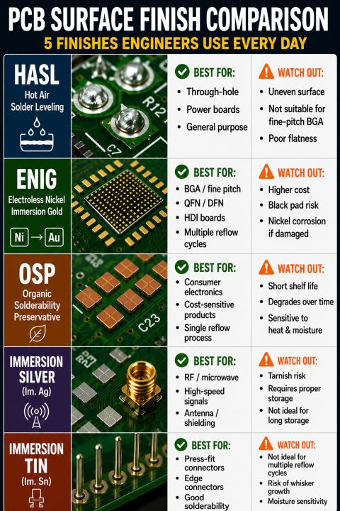
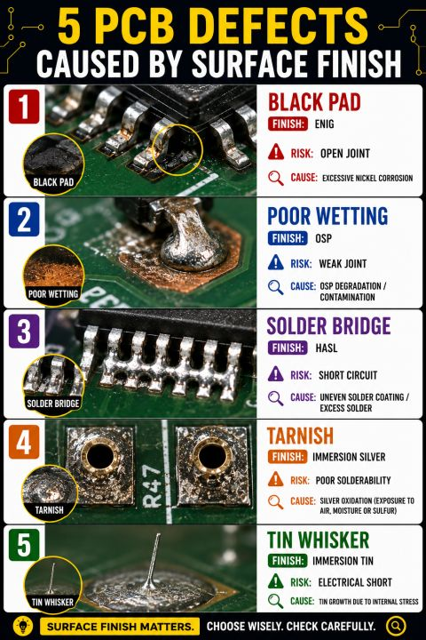
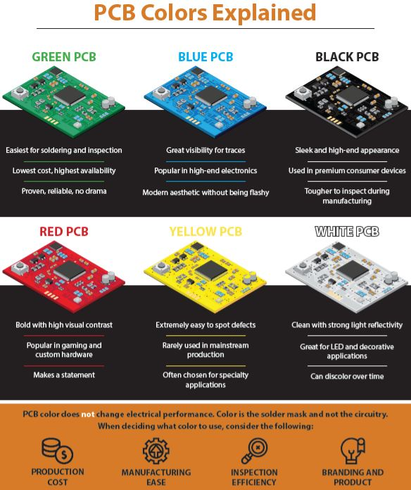

Principales finitions de surface (HAL, Ni/Au, OSP, Sn, Ag, or dur) avec explication,
avantages, inconvénients et remarques pratiques pour la sérigraphie et la refusion.
HASL vs ENIG : la planéité des pads influence directement la régularité du dépôt de pâte,
surtout pour les BGA fine pitch.

Comparaison rapide des finitions : HASL, ENIG, OSP, Immersion Silver et Immersion Tin.

Défauts possibles liés aux finitions : black pad, mauvais mouillage, ternissement,
whiskers d’étain, etc.

La couleur du PCB vient principalement du solder mask. Elle influence surtout l’inspection,
le contraste, l’esthétique et parfois l’AOI, pas les performances électriques du circuit.
1. Choisir une finition
2. Description, avantages & inconvénients
Aucune finition sélectionnée.
Sélectionner une finition dans la liste pour afficher la description, les avantages,
les inconvénients et quelques remarques pratiques pour la sérigraphie et la refusion.
Couleurs de PCB / solder mask
Impact de la couleur du PCB
La couleur correspond principalement au solder mask. Elle n’améliore pas les performances électriques du circuit.
InspectionAOICoûtEsthétiqueApplications LED
Résumé rapide :
Vert : standard industriel, coût faible, très bonne disponibilité, inspection facile.
Bleu : bon contraste, aspect moderne, utilisé pour différenciation produit.
Noir : aspect premium, mais inspection plus difficile et AOI parfois moins confortable.
Rouge : contraste fort, souvent utilisé pour prototypes, gaming ou différenciation visuelle.
Jaune : très visible, utile pour applications spéciales, mais rare en production standard.
Blanc : très réfléchissant, intéressant pour LED/éclairage, mais peut jaunir ou marquer avec le temps.
Point important :
La couleur du solder mask influence surtout l’inspection, l’AOI, l’esthétique, le coût et la disponibilité.
Elle ne change pas directement les performances électriques du circuit.
Pour les cartes LED, le blanc est souvent choisi pour réfléchir la lumière.
Pour les cartes industrielles classiques, le vert reste le choix le plus simple, économique et robuste.
• Cette fiche est un rappel synthétique : les choix de finition dépendent aussi du
coût, des contraintes environnementales, de la fiabilité, des exigences de test, etc.
• Pour un projet donné, il est toujours utile de confronter ces éléments avec les
recommandations du fabricant de PCB et les besoins réels (fine pitch, BGA, PIP, stockage long, wire bonding...).